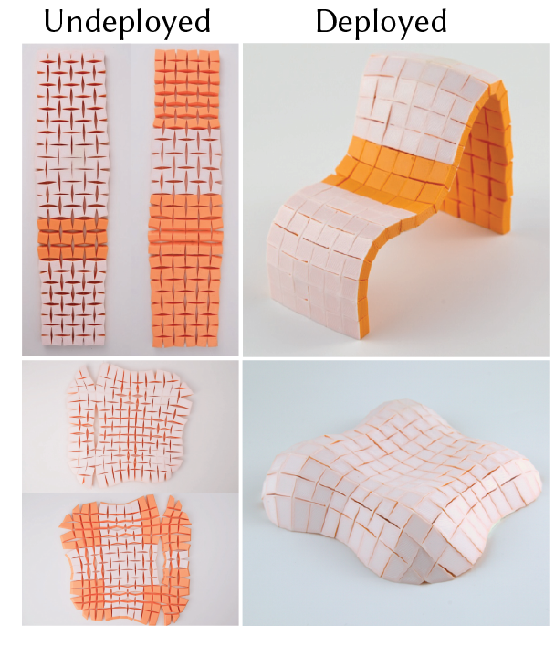
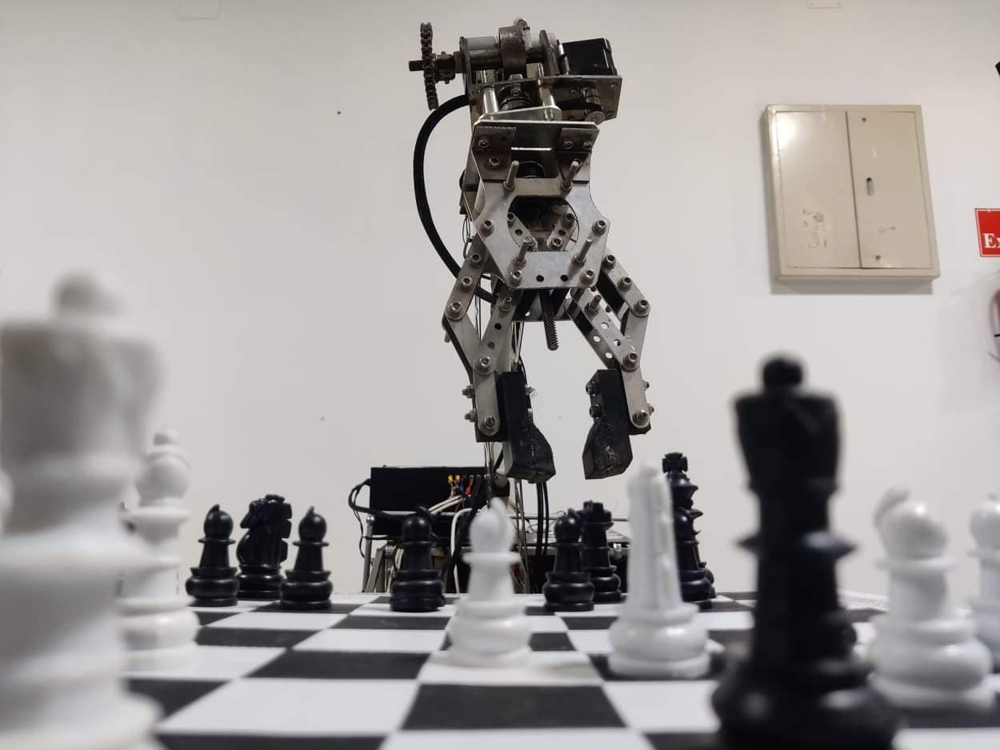
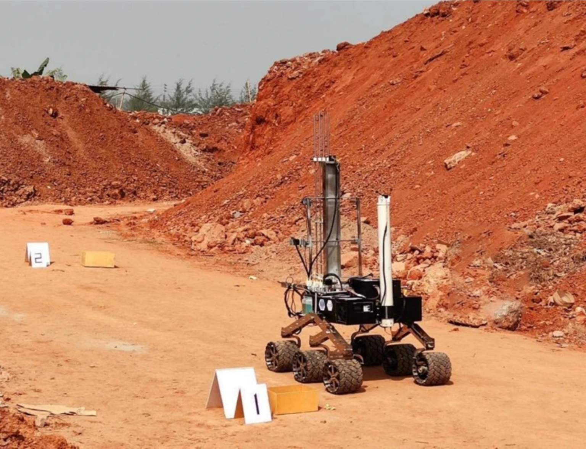
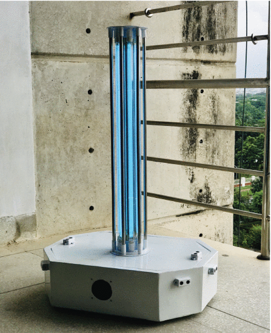
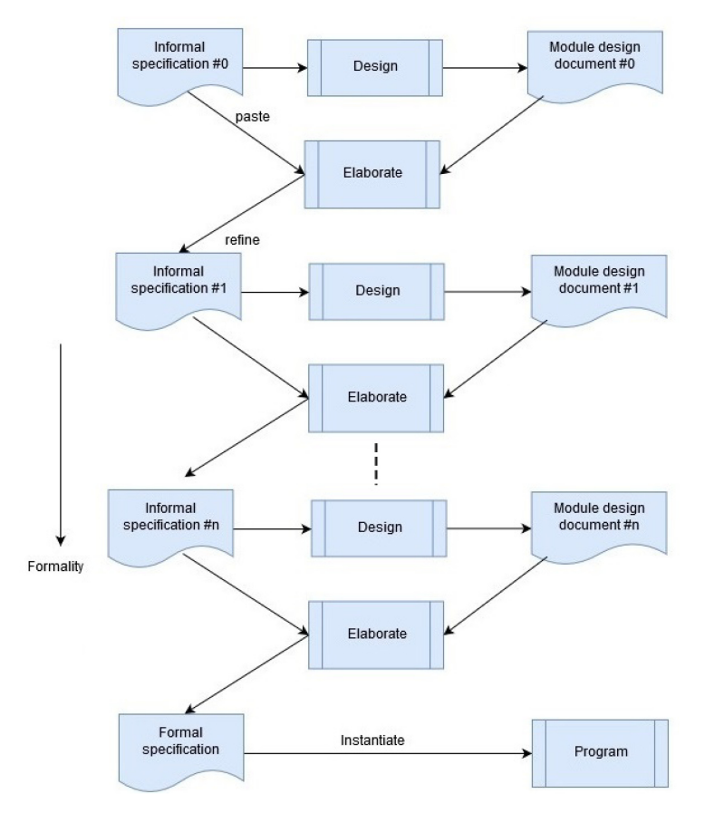
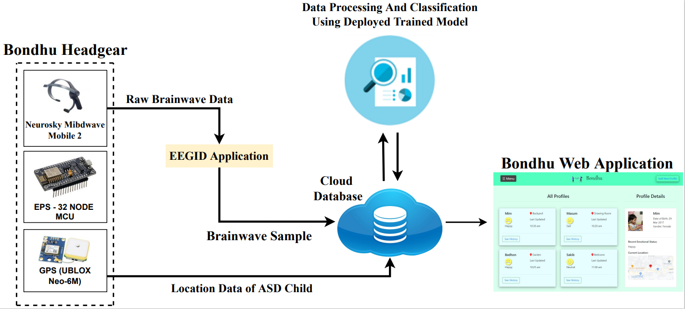

|
Akib Zaman
Hello! I'm Akib, a second-year PhD student in EECS at MIT who is broadly interested in robotics and
its intesections
with computer graphics and vision. I am affiliated with the MIT Computer Science and
Artificial Intelligence Laboratory (MIT CSAIL) and advised
by Professor Mina Konaković Luković as a member of
the Algorithmic Design Group.
I develop computational methods that integrate differential geometry, physics-based simulation,
machine learning, and digital fabrication to co-design structure and behavior in physically
realizable systems, enabling new classes of soft robots, deployable mechanisms, and metamaterials.
Outside research, you’ll often find me hiking or playing table tennis, chess, and badminton. If you
would like to collaborate or just chat about research, happy to connect; feel free to reach out!
Email /
CV /
Google Scholar
/
Github /
LinkedIn
|
|
|

|
One String to Pull Them All: Fast Assembly of Curved Structures from Flat Auxetic
Linkages
Akib Zaman, Jacqueline Aslarus, Jiaji Li, Stefanie Mueller, Mina Konaković Luković
ACM Transaction on Graphics, SIGGRAPH ASIA 2025
Project Page |
Paper
|
|

|
Phoenix: Towards Designing and Developing a Human Assistant Rover
Akib Zaman, Mohammad Shahjahan Majib, Shoeb Ahmed Tanjim, Shah Md Ahasan Siddique,
Fardeen Ashraf, Shafayetul Islam,
Abu Hena Md Maruf Morshed, Shadman Tajwar Shahid, Ishraq Hasan, Oliullah Samir, Safwan Shafquat, Naim
Ibna Khadem Al Bhuyain, Asif Mahmud Rayhan, Md Mushfik Ul Islam, Md Akhtaruzzaman, Md Mahbubur Rahman
IEEE Access, 2022
Paper |
Video
|
|

|
A multiple biomolecules-based rapid life detection protocol embedded in a rover
scientific subsystem for soil sample analysis
Akib Zaman, Fardeen Ashraf, Haseena Khan, Faria Noshin Ahona, Oliullah Samir, Asif
Mahmud Rayhan, Sadia Nur Nazifa, Hafsah Mahzabin Chowdhury, Md Mahbubur Rahman
Scientific Reports
Website |
Paper
|
|

|
UVC-PURGE: A novel cost-effective disinfection robot for combating COVID-19 pandemic
Akib Zaman, Mohammad Shahjahan Majib, Shoeb Ahmed Tanjim, Shah Md Ahasan Siddique,
Shafayetul Islam, Md Shadman Aadeeb, Nafiz Imtiaz Khan, Riasat Haque,
Md Rashid Ul Islam, M Rayhan Ferdous Faisal, Siddharth Malik, Muhammad Nazrul Islam
IEEE Access
Paper
|
Video
|
|

|
Natural Language Based Conceptual Modelling Frameworks: State of the Art and Future
Opportunities
Bayzid Ashik Hossain, Md Saddam Hossain Mukta, Md Adnanul Islam,
Akib Zaman, Rolf Schwitter
ACM Computing Surveys, 2023
Paper
|
|

|
Emotion Detection for Children on the Autism Spectrum using BCI and Web Technology
Akib Zaman,
Anika Tahsin, Mostafizur Rahman, Rabeya Akhter, Hinoy Rahman, Shobnom Mustary,
Dewan Md Farid
IEEE/WIC/ACM WI-IAT, 2022
Paper
|
|
{kind=link}